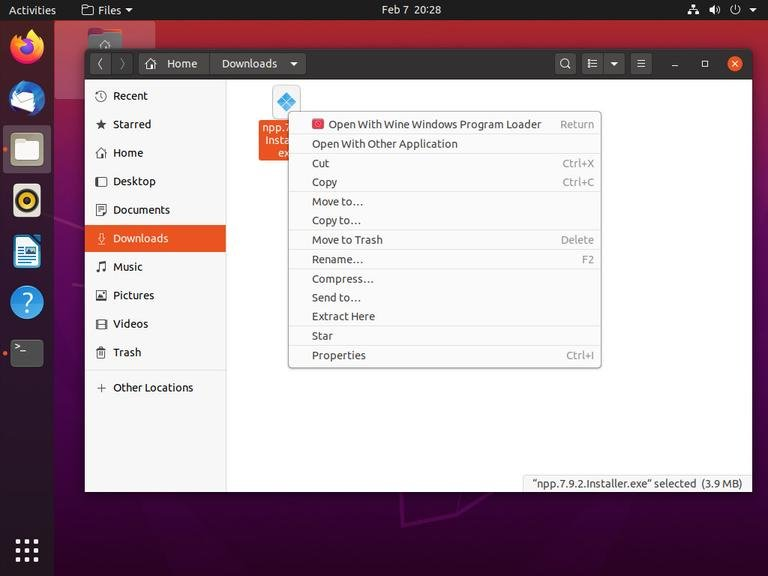

Удаление
после удаления winetricks-ом
sudo apt-get remove --autoremove wine-stable wine-stable-amd64
sudo apt update
sudo apt clean && sudo apt autoclean
sudo apt remove && sudo apt autoremove
проверка:
wine --version
Установка:
В этом разделе мы предоставим пошаговые инструкции о том, как установить Wine версии 6 на Ubuntu 20.04.
Если вы используете 64-битную систему Ubuntu, включите 32-битную архитектуру и обновите список пакетов:
sudo dpkg --add-architecture i386
sudo apt update
Импортируйте GPG-ключ репозитория WineHQ:
wget -qO- https://dl.winehq.org/wine-builds/winehq.key | sudo apt-key add -
Добавьте репозиторий WineHQ в вашу систему:
sudo apt install software-properties-common
sudo apt-add-repository "deb http://dl.winehq.org/wine-builds/ubuntu/ $(lsb_release -cs) main"
Установите Wine, набрав:
sudo apt install --install-recommends winehq-stable
Это установит кучу пакетов. После завершения проверьте установку Wine, набрав:
wine --version
На момент написания этой статьи последней основной версией Wine была версия 6.0:
wine-6.0
Wine установлен и готов к использованию.
Настройка Wine
Чтобы начать настройку Wine, запустите команду winecfg в своем терминале. Команда устанавливает Mono и Gecko и устанавливает среду Wine:
winecfg
Появится диалоговое окно с вопросом, хотите ли вы установить пакет wine-mono:
Нажмите кнопку «Установить», и установка начнется. После этого появится новый диалог, предлагающий установить Gecko. Снова нажмите кнопку «Установить».
Когда установка будет завершена, отобразится диалоговое окно конфигурации Wine. Здесь вы можете настроить различные параметры Wine. В большинстве случаев достаточно настроек по умолчанию. По завершении закройте диалоговое окно.
Установка Notepad ++ в Ubuntu
Теперь, когда Wine установлен и настроен, мы объясним, как устанавливать приложения Windows на вашу Ubuntu.
В этом руководстве мы покажем вам, как установить Notepad ++, один из самых популярных текстовых редакторов Windows. Запустите браузер и загрузите установочный файл со страницы загрузки Notepad ++.
После завершения загрузки запустите установку, щелкнув .exe файл правой кнопкой мыши и выбрав «Открыть с помощью Wine Windows Program Loader».

Мастер установки запустится, выберет язык и установит Notepad ++ так же, как и любое приложение на компьютере с Windows.
Приложения Windows устанавливаются в каталог ~/.wine/drive_c/.
Чтобы запустить редактор Notepad ++, перейдите в каталог ~/.wine/drive_c/Program Files (x86)/Notepad++ и дважды щелкните файл notepad++.exe.
Вы также можете запустить приложение из панели поиска действий.
Заключение
Мы показали вам, как установить Wine на рабочий стол Ubuntu 20.04 и как устанавливать приложения Windows.
Если вы столкнулись с проблемой или хотите оставить отзыв, оставьте комментарий ниже.
�